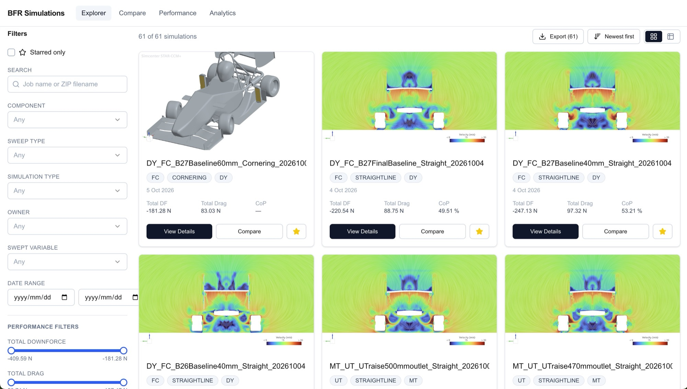
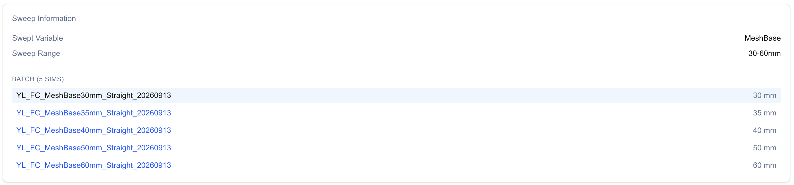
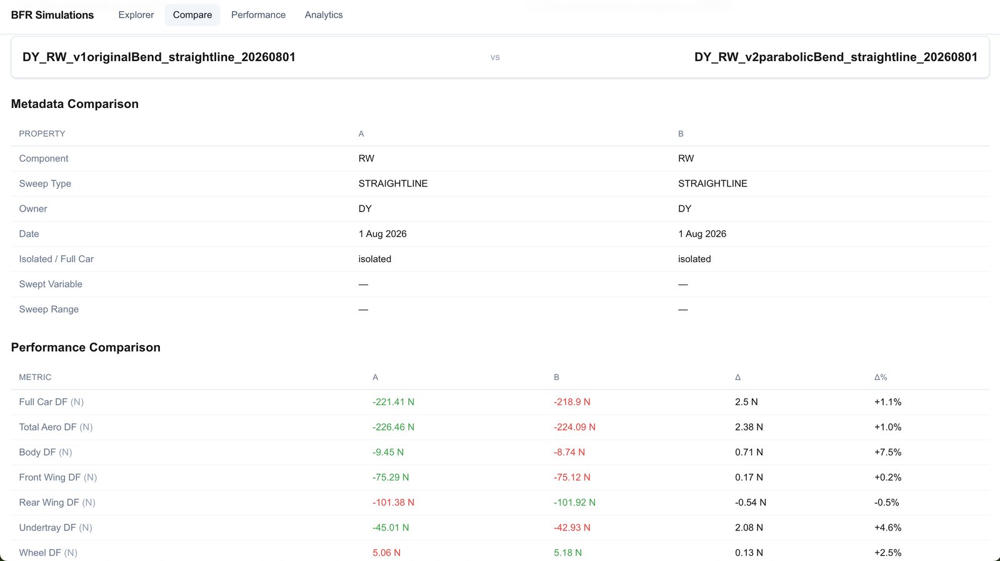
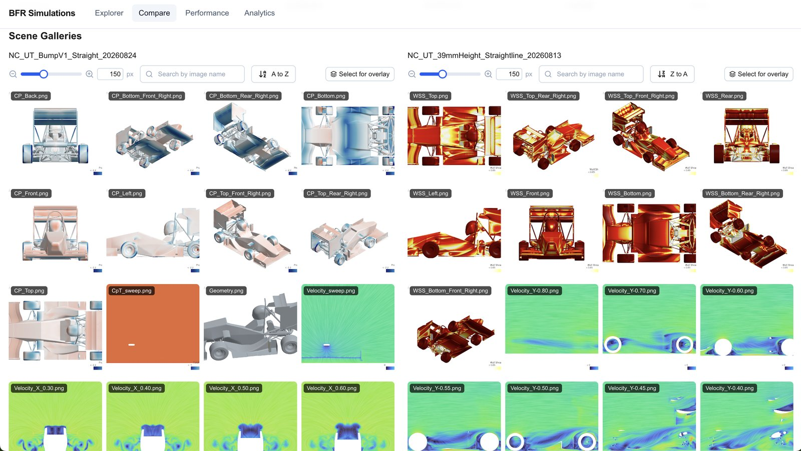
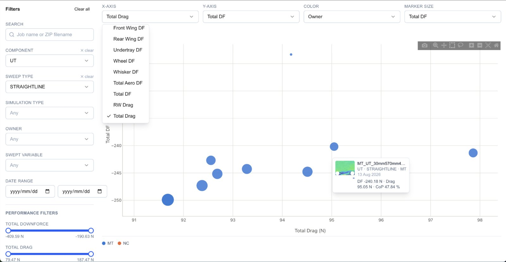
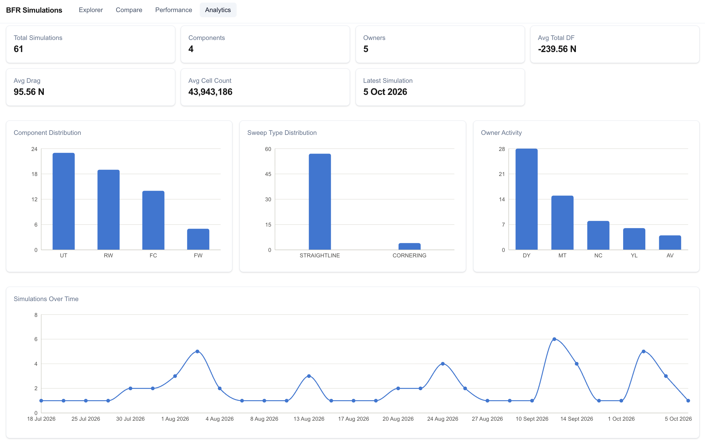
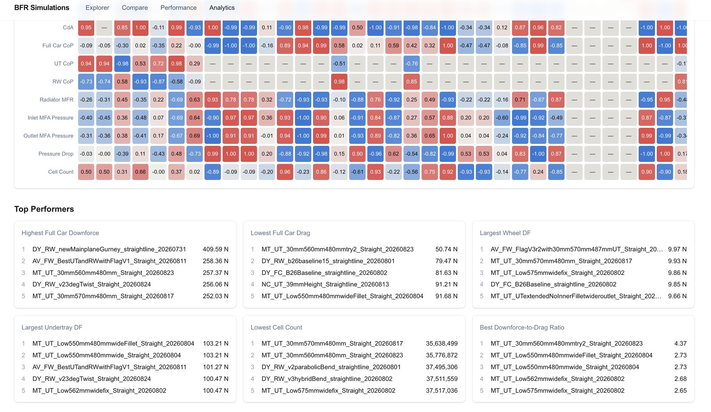
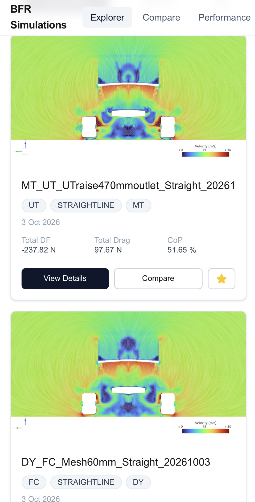
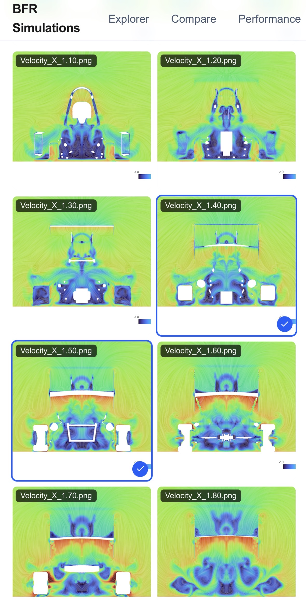

Berkeley Formula Racing's aero team kept CFD results on individual laptops and in personal folders. There was no central place to find a run, no record of who ran what, and results could only be viewed on a laptop. Comparing two runs meant screenshotting scenes into slides and typing ~20 force-report terms per run into a spreadsheet. This centralized simulation database replaced that, and the whole team can query it from any device, including phones at testing.
Each finished run on the HPC cluster produces a post.zip (force report + exported scene images). A harvester collects those automatically and the dashboard turns them into a queryable database.
What it replaced: digging through individual laptops and personal folders to find a specific run, with no consistent naming to search by and no record of who ran it.
Finished runs are harvested off the cluster automatically, so nobody has to upload anything. Component, sweep type, owner, and performance metrics are extracted and filterable, with the scene render shown up front so teammates recognize a run at a glance.
Run provenance: every run records who ran it and when, sortable and filterable across everyone's runs.
Shared baselines: starred baseline runs give the team a common reference point to compare new designs against.

A parametric sweep is a batch of runs that only make sense together.
Runs in the same sweep are parsed into one batch: they share tags for the swept variable and range, and each run cross-lists every other run in its sweep, so stepping through a sweep is one click per value. Sweeps are also filterable by swept variable in the Explorer.

What it replaced: screenshotting scenes into slides and typing ~20 force-report terms per run into a spreadsheet.
Metadata and every performance metric are laid out delta-first, so green/red coloring shows which run won on each axis without doing the subtraction yourself. Scene galleries for both runs sit underneath, with an overlay tool for direct visual comparison.


Added after direct teammate feedback of needing to compare flow fields.
Select a render from each run and the tool overlays them directly. No more manually lining up screenshots in slide decks.
What it replaced: no way to see the whole design space at once, only one run at a time.
Any two metrics can be plotted against each other across every run in the dataset, colored by owner, sized by a third variable. This is where a downforce/drag trade-off across configurations actually becomes visible instead of implied.

What it replaced: no visibility into who was running what, or whether coverage across components was balanced.
A rolling view of team throughput: which components are getting the most simulation attention, who's contributing, and how activity trends across the season. Below that, a correlation matrix and auto-surfaced leaderboards (highest downforce, lowest drag, best downforce-to-drag ratio, lowest cell count) mean nobody has to sort a spreadsheet to find the best-performing geometry.


What it replaced: results that could only be viewed on the laptop they lived on.
The dashboard works on mobile, so teammates pull up renders and plots at testing and share them with other subteams.


Centralizing results also made the most common task, comparing two runs, much faster.
Before, this meant downloading and unzipping both post.zip files, building slides of side-by-side screenshots, and typing force-report numbers into a spreadsheet. The same task, step by step:
| Step | Before | After |
|---|---|---|
| Download 2 post.zip files + unzip | ~2–5 min | 0 (auto-harvested) |
| Build visual comparison (slides, side-by-side screenshots) | ~15–25 min | Open dashboard, pick 2 runs |
| Enter force data (~20 terms × 2 runs) | ~10–20 min | 0 |
| Build table / plot | ~10–15 min | 0 (built in) |
| Total (2-run comparison) | ~35–65 min | ~2–5 min |
Scope: inspecting anything outside the exported scenes still requires opening the full sim in STAR-CCM+. The database covers the routine comparisons that happen on every run.